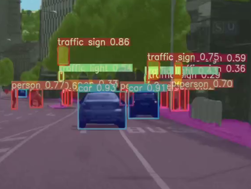

人工智能是什么？
通俗解释
人工智能就是让东西（thing）像人一样会听、会说、会动，更重要的是像人一样会思考。说得通俗一点，这个东西可能是一部手机、也可能是一个路灯，还可能是一个音箱，也可能是一辆车，总之，它就是一个"会智能思考"的物体。
百度百科定义
人工智能（Artificial Intelligence），英文缩写为AI。它是研究、开发用于模拟、延伸和扩展人的智能的理论、方法、技术及应用系统的一门新的技术科学。
人工智能是计算机科学的一个分支，它企图了解智能的实质，并生产出一种新的能以人类智能相似的方式做出反应的智能机器，该领域的研究包括机器人、语言识别、图像识别、自然语言处理和专家系统等。
人工智能核心分支
机器学习
人工智能的核心技术之一，通过让计算机从数据中学习和改进，使其能够自动进行任务和决策。常见算法包括线性回归、决策树、支持向量机等。
自然语言处理（NLP）
用计算机处理、理解及运用人类语言，是计算机科学与语言学的交叉学科，包括文本分析、机器翻译、语音识别等方向。
深度学习
机器学习的一个分支，通过构建和训练深层神经网络模型，实现对大规模数据的学习和表征，如CNN、RNN、Transformer等。
计算机视觉
让计算机能够理解和解释图像和视频，包括图像分类、目标检测、图像分割、人脸识别等任务，从图像中提取有用信息。
人工智能学习路线
基础知识体系
Python语言
- 开发环境：Anaconda/Miniconda、Pycharm/Jupyter
- 基础语法：注释、数据类型、判断语句、循环语句
- 函数与面向对象：函数定义、类和对象、继承
- 科学计算模块：Numpy、Pandas、Matplotlib
数学基础
- 高等数学：一元与多元微分学、最优化相关
- 线性代数：矩阵运算、特征值与特征向量
- 概率论：概率分布、期望与方差、贝叶斯定理
- AI基础认知：机器学习vs深度学习、有监督/无监督/强化学习
人工智能有何用？
应急领域应用
火灾检测报警系统（项目实战）
使用OpenCV和YOLOv8深度学习模型，开发实时火灾检测系统，可从摄像头或视频中自动识别火灾区域，并触发报警机制。
# 火灾检测系统核心代码示例
from ultralytics import YOLO
import cv2
import math
from pygame import mixer
# 初始化摄像头和模型
cap = cv2.VideoCapture('0914.mp4') # 视频文件或摄像头
model = YOLO('best.pt') # 预训练的火灾检测模型
# 初始化音频报警
mixer.init()
alert_sound = mixer.Sound('alert.wav')
while True:
ret, frame = cap.read()
if not ret:
break
# 模型预测
results = model(frame)
# 处理检测结果
for result in results:
boxes = result.boxes
for box in boxes:
conf = math.ceil((box.conf[0]*100))/100
if conf > 0.5: # 置信度阈值
x1, y1, x2, y2 = box.xyxy[0]
x1, y1, x2, y2 = int(x1), int(y1), int(x2), int(y2)
cv2.rectangle(frame, (x1, y1), (x2, y2), (0, 0, 255), 2)
cv2.putText(frame, f'Fire: {conf}', (x1, y1-10),
cv2.FONT_HERSHEY_SIMPLEX, 0.5, (0, 0, 255), 2)
# 触发报警
if not mixer.get_busy():
alert_sound.play()
cv2.imshow('Fire Detection', frame)
if cv2.waitKey(1) & 0xFF == ord('q'):
break
cap.release()
cv2.destroyAllWindows()
应急领域其他应用场景
预警系统
基于AI算法分析历史数据和实时传感器数据，预测自然灾害（如洪水、地震）、工业事故等风险，提前发出预警。
搜索与救援
结合无人机、机器人与AI图像识别技术，在灾害现场快速定位受困人员，提高救援效率，减少救援人员风险。
决策支持
AI系统分析灾害规模、受影响区域、资源分布等信息，为应急指挥提供科学决策建议，优化救援策略。
物资调配
基于AI优化算法，实现应急物资的智能调度，确保物资高效送达需求地点，减少资源浪费。
AI在其他领域的应用

交通领域
交通标志识别、自动驾驶、交通流量预测与优化，提升交通安全性和通行效率。
医疗领域
医学影像诊断（CT、X光）、疾病风险预测、药物研发加速，辅助医生提升诊断准确性。
工业领域
工业缺陷检测、设备故障预测、生产流程优化，实现智能制造和质量提升。
教育领域
个性化学习推荐、智能答疑、作业自动批改，提升教学效率和学习体验。